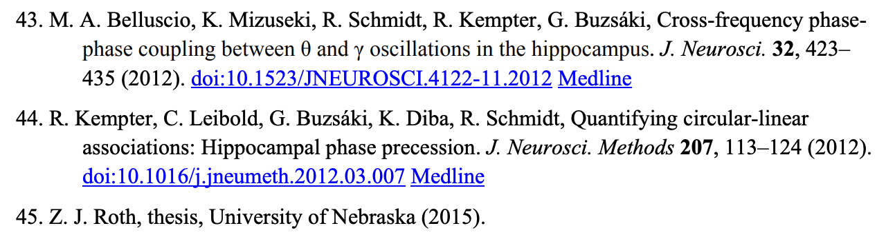
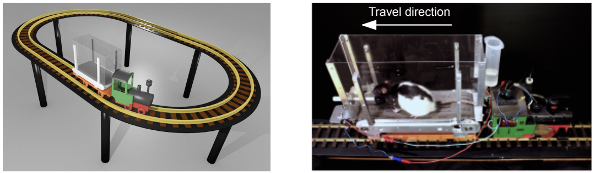

Zach Roth
How I know Zach
Zach had his PhD thesis cited in a research* article in the November 2018 issue of Science, which I will never let him forget is one of the coolest things ever.

Drieu et al. 2018, ScienceWork highlights
*Also important to note: this paper from the Zugaro lab includes data from one of, if not the best, experimental paradigms of all time. The rat choo choo train.
